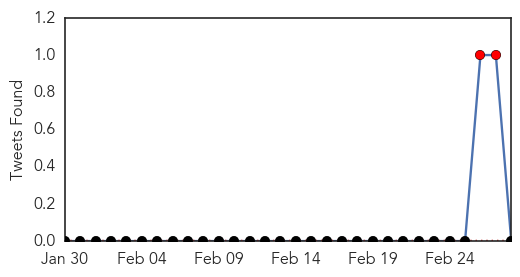

Ebola
30-Day Web Trend
0 alerts, 0 warnings

30-Day Twitter Trend
15 alerts, 5 warnings

Article Locations

Article Confidences

Top Articles:
- 0.999
- Ebola ebbs but aid agencies warn against complacency
- 0.999
- Human trials begin of US-made Ebola drug ZMapp
- 0.999
- Ebola outbreak: Disease ebbs in West Africa but aid agencies warn against complacency
- 0.998
- Ebola outbreak: Sierra Leone vice-president quarantined
- 0.996
- Ebola Victim Returns to Liberia, Aids Research - WRCBtv.com
- 0.995
- Decision on Ebola mass vaccination in August at earliest
- 0.991
- Thoughts turn to recovery as Ebola ebbs
- 0.990
- Shropshire Ebola doctor delighted with Sierra Leone progress « Shropshire Star
- 0.986
- Haunting memories of nurse's Ebola stint
- 0.983
- presidential commission
- 0.974
- US to begin clinical trial of Ebola experimental drug ZMapp in Liberia
- 0.973
- Obama, Liberian President Sirleaf discuss Ebola recovery
- 0.973
- Early Warning for Ebola: Strengthening Africa's Capacity to Anticipate Risk of Outbreaks
- 0.973
- Sierra Leone divided on reinstated Ebola measures
- 0.972
- West Aussies join ‘Florence Nightingale’ of Ebola crisis
- 0.970
- U.S. Ebola survivor Dr. Craig Spencer gives his side of the stor - WLTZ 38
- 0.964
- US and Liberia begin clinical trial of Ebola experimental drug ZMapp
- 0.964
- US and Liberia begin clinical trial of Ebola experimental drug ZMapp
- 0.932
- US military ends Ebola mission in Liberia — Nation — Bangor Daily News — BDN Maine
- 0.910
- Gulf Daily News Local News Newlyweds' travel ban agony
- 0.908
- Obama, Liberian President discuss Ebola recovery
- 0.901
- Newlyweds face ebola travel ban agony
- 0.888
- US Military Closes Ebola Mission in Liberia as the Epidemic Nears End
- 0.888
- UPDATED: Ebola Response in Clarendon
- 0.847
- Liberia leader hails Obama's 'extraordinary' Ebola efforts. Politics. Tengrinews.kz
- 0.824
- Panasonic Donates Solar Lanterns to UNDP for Ebola Relief Efforts
- 0.778
- Human Antibodies can Neutralize the Marburg Virus, a Close Cousin to Ebola Virus
- 0.653
- Spotlight on Ebola, post-2015 development agenda at ACP health ministers meeting
- 0.633
- African church-based health experts want more recognition from governments
- 0.609
- Agriculture Expansion In Tanzania May Increase Plague Risk
- 0.604
- Liberia Says “Thank You” by Nancy LeTourneau
Top Tweets:
- 0.985
- RT: AfricaAgainstEbola Grâce à votre geste, nous repousserons le virus Ebola hors de l’Afrique. Pour contribuer les... http://t.…
- 0.975
- Regional Spread of Ebola Virus, West Africa, 2014 http://t.co/mKSAASUFn2
- 0.883
- Mapping the Ebola outbreak Africaagainstebola http://t.co/bDi5hGaz3n @EbolaAlert @Utmanaebola
- 0.829
- Children's Hospital of Philadelphia Hosts Ebola Education Workshop - CBS Local http://t.co/Bw8iWK806j ebola EVD
- 0.770
- Sierra Leone VP Samuel Sam-Sumana Places Himself in Ebola Quarantine - http://t.co/FMQyohd10H http://t.co/8zTiuu4rSq ebola EVD
- 0.763
- Ebola endemic in west Africa remains a risk http://t.co/EmdnKh4RR8
- 0.752
- It Kills Germs For Up To 6 Hours. Can It Wipe Out Ebola? - NPR (blog) http://t.co/kQZjzaNeR5 ebola EVD
- 0.752
- It Kills Germs For Up To 6 Hours. Can It Wipe Out Ebola? - NPR (blog) http://t.co/HVB4HGnu5o ebola EVD
- 0.745
- For Africa to overcome the Ebola epidemic, we as Africans and friends of Africa need to fight this disease together.AfricaAgainstEbola
- 0.711
- Afrique de l'Ouest. Insécurité alimentaire localisée Janvier à juin 2015 ebola http://t.co/Q1bHXs6e7u
- 0.652
- RT: Ebola: Sierra Leone village in lockdown after 31 new cases recorded http://t.co/2eyvypB1kI
- 0.575
- SierraLeone Leone registers rise in new Ebola cases | http://t.co/YfAzLRNrE3
- 0.574
- RT: Nearly Beaten in Sierra Leone, Ebola Makes a Comeback by Sea http://t.co/OCk7LC0nNT
- 0.556
- Ebola Victim Returns to Liberia, Aids Research - http://t.co/FMQyohd10H http://t.co/S8bKJI8GsM ebola EVD
Swine Flu
30-Day Web Trend
14 alerts, 9 warnings

30-Day Twitter Trend
3 alerts, 0 warnings

Article Locations

Article Confidences

Top Articles:
- 1.000
- Madhya Pradesh: Two swine flu deaths in Indore
- 1.000
- As swine flu cases rise, docs attempt to downplay fear
- 0.999
- Swine Flu Death Toll Rises to 1,041
- 0.999
- Karachi hospitals ill-prepared to deal with swine flu
- 0.998
- Karachi hospitals ill-prepared to deal with swine flu
- 0.997
- Swine flu in Mumbai: 3-year old boy succumbs to the disease
- 0.995
- Bengal hospitals refusing swine flu patients: NGO tells Mamata
- 0.995
- Swine Flu cases up in Gujarat, death toll at 265
- 0.995
- Two more positive cases take swine flu tally to 11
- 0.995
- Swine flu tightens its grip over India
- 0.995
- Swine Flu Death Toll Rises to 1,041
- 0.995
- Swine flu tightens its grip over India
- 0.994
- Swine flu tightens its grip over India
- 0.994
- Praveen Togadia asks Centre to declare swine flu as national emergency
- 0.988
- Swine Flu Kills 965 in India as It Battles Problems with Diagnosis
- 0.988
- Swine flu claims 9 more lives in Gujarat; toll reaches 265
- 0.988
- Sonam Kapoor diagnosed with swine flu
- 0.986
- Swine flu claims nine more lives in Gujarat; toll reaches 265
- 0.985
- Sonam Kapoor tests positive for swine flu
- 0.984
- Swine flu Death toll Reaches 256 and 4,162 Cases
- 0.984
- Govt Admits to Shortage of Labs for H1N1 Testing
- 0.984
- Rain makes temp drop, swine flu to spread more
- 0.983
- School draws flak for asking some kids to skip classes
- 0.980
- Sonam Kapoor tests positive for swine flu
- 0.970
- Army man dies of Swine Flu in Kashmir
- 0.961
- CPR hospital ill-prepared to tackle swine flu: Activists
- 0.929
- Mumbai: Sudden rains can wreak havoc on your health
- 0.894
- 'Prem Ratan Dhan Payo' Actress Sonam Kapoor Tests Positive for Suspect Swine Flu
- 0.892
- The Indian Express
- 0.865
- Drive to catch stray pigs launched
- 0.865
- Soldier dies of Swine Flu in Jmu
- 0.835
- Sonam Kapoor tests positive for swine flu
- 0.806
- Actress Sonam Kapoor hospitalised; swine flu test conducted
- 0.800
- Sonam Kapoor down with swine flu
- 0.793
- Actress Sonam Kapoor down with swine flu
- 0.786
- JK Governor reviews H1N1 with MoHFW’s experts
- 0.727
- Sonam Kapoor suffering from cough and cold; sources close to the actress refute Swine Flu rumours
- 0.720
- Actress Sonam Kapoor tests positive for Swine Flu!
- 0.710
- Swine Flu-hit Chennai Nurse in Kumari GH
- 0.678
- H1N1: No Fresh Death in Kashmir
- 0.642
- Sonam Kapoor seeks check-up in Rajkot hospital
- 0.642
- Sonam Kapoor has swine flu
- 0.639
- Actress Sonam Kapoor down with swine flu
- 0.633
- Sonam Kapoor suffering from cough and chilly; sources close to the actress refute Swine Flu rumours
- 0.619
- Actress Sonam Kapoor down with swine flu
Top Tweets:
-
No tweets found for Feb 28, 2015